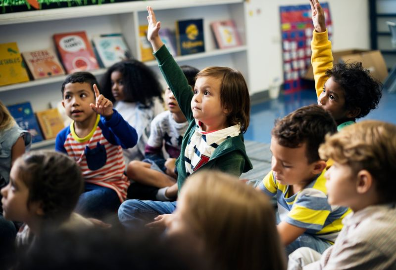
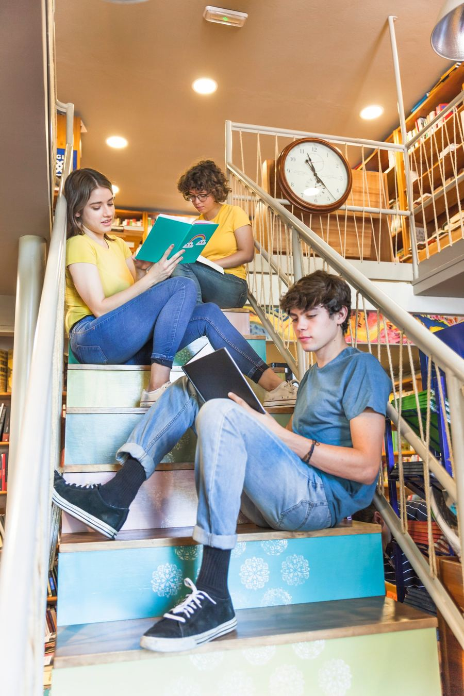

Matrículas abertas 2027
Aqui, cada aluno atravessa para o futuro com segurança
Do primeiro dia na Educação Infantil à aprovação no vestibular, caminhamos junto com a sua família.
O Colégio Nova Ponte nasceu com uma ideia simples: educar é conectar. Conectamos o que a criança já sabe ao que ela ainda vai descobrir, e a casa à sala de aula.
Nossa proposta une rigor acadêmico e cuidado com as pessoas. Aqui, os alunos aprendem a pensar, a conviver e a escolher com autonomia.
Um caminho contínuo, com acompanhamento em cada etapa.
Brincadeira, música e descobertas em um ambiente acolhedor, com foco no desenvolvimento motor, social e da linguagem.
Quero conhecer
Alfabetização sólida, leitura, ciências e projetos que despertam a curiosidade e criam o hábito de estudar.
Quero conhecerPreparação para o ENEM, vestibulares e para as decisões de carreira, com autonomia e pensamento crítico.
Ver o programaTrês anos para aprender a estudar, escolher e se destacar.

Orientação vocacional, feira de profissões e mentorias com ex-alunos.
Debates, estudos de caso e projetos em que o aluno decide como investigar.
Simulados mensais, plantões de dúvidas e correção de redação individual.
Laboratório, robótica e projetos interdisciplinares apresentados à comunidade.
O que as famílias percebem logo na primeira visita, em três idiomas: português, inglês e espanhol.
Cada aluno tem um professor de referência e reuniões periódicas com a família.
Controle de acesso, equipe preparada e espaços pensados para explorar e aprender.
Rodas de conversa, mediação de conflitos e educação socioemocional na rotina.
Para aprender também fora da sala de aula.
Futsal, vôlei, natação e jogos escolares.
Teatro, clube de leitura e saraus.
Música, desenho, dança e artesanato.
Robótica, horta escolar e feira de ciências.
Preencha o formulário e nossa equipe entra em contato para agendar uma visita ou tirar dúvidas sobre matrículas.